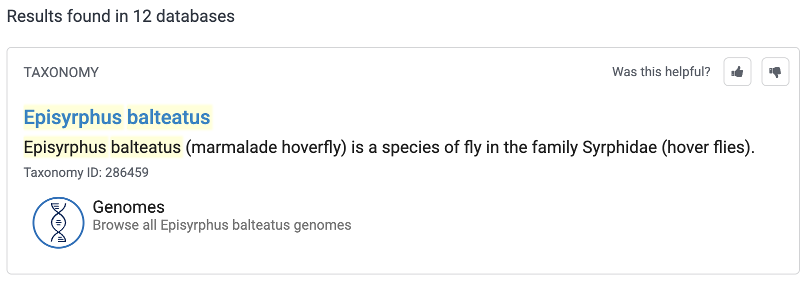
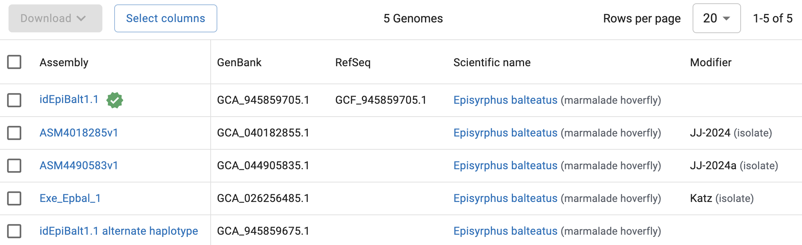
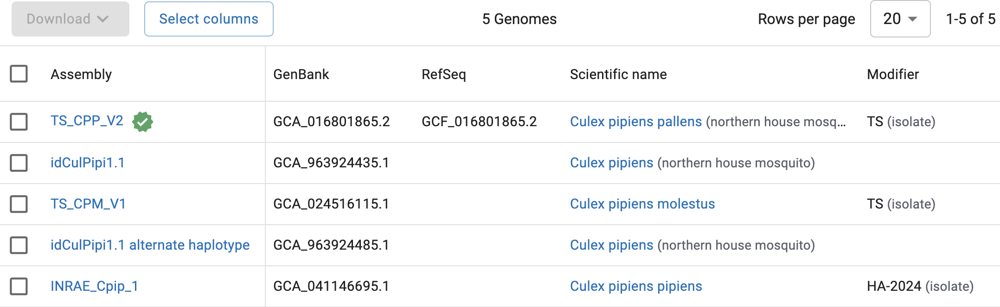

Working with genome and HTS data
Week 3 lab – part 2
![]()
1 Introduction
1.1 Goals for this part of the lab
In this second part of the lab, you will learn how to:
- Look at files in the Unix shell
- Find a reference genome and the associated files
- Explore and understand reference genome files
- Explore and understand HTS files
- Perform quality-control on HTS reads with a command-line tool, FastQC
1.2 The dataset
As discussed in the lecture, you’ll work with RNA-Seq data from Garrigós et al. (2025) in today’s and next week’s labs:

This paper used RNA-Seq data to study gene expression in Culex pipiens mosquitos infected with malaria-causing Plasmodium protozoans. Next week, you will learn about RNA-Seq methodology and experimental design, and we’ll discuss the paper’s experimental design in more detail. Here, we’ll explore the paper’s HTS data files.
2 The files you’ll work with
The main data files in a reference-based HTS project1 are sequence reads (usually produced for the focal project) and reference genome files (usually already available).
For this project –our re-analysis of the Garrigós et al. (2025) data– I have downloaded those files for you and placed them in /fs/scratch/PAS2880/ENT6703/data on OSC. You’ve seen some of these files in the first part of this lab, but we didn’t pay much attention to what they represent.
First, we’ll actually move one level up to the ENT6703 dir:
cd /fs/scratch/PAS2880/ENT6703Let’s get an overview of the full set of files using the tree command (with the option -C to show colors):
# Unlike ls, tree will show the full directory structure
tree -C data# (The colors you should see in the terminal aren't shown here)
data
├── fastq
│ ├── ERR10802863_R1.fastq.gz
│ ├── ERR10802863_R2.fastq.gz
│ ├── ERR10802864_R1.fastq.gz
│ ├── ERR10802864_R2.fastq.gz
│ ├── ERR10802865_R1.fastq.gz
│ ├── ERR10802865_R2.fastq.gz
│ ├── ERR10802866_R1.fastq.gz
│ ├── ERR10802866_R2.fastq.gz
│ ├── ERR10802867_R1.fastq.gz
│ ├── ERR10802867_R2.fastq.gz
| ├── [...truncated - more FASTQ files...]
├── meta
│ └── metadata.tsv
├── README.md
└── ref
├── GCF_016801865.2.fna
└── GCF_016801865.2.gtf
3 directories, 48 filesSo, we have:
- A whole bunch of FASTQ files (
.fastq.gzextension) which contain the HTS reads - Two reference genomes files representing the assembly/sequence (
.fna) and the annotation table (.gtf) - A sample metadata file with treatment information for each sample
All these files are plain-text files, which is one reason why the Unix shell excells at working with them. You’ll take a closer look at each below.
Looking at the tree output, what is the (full) path to the file metadata.tsv? (Click to expand)
The path is /fs/scratch/PAS2880/ENT6703/data/meta/metadata.tsv.
At the end of the Garrigós et al. (2025) paper, there is a section called “Open Research” with a “Data Availability Statement”, which reads:
Raw sequences generated in this study have been submitted to the European Nucleotide Archive ENA database (https://www.ebi.ac.uk/ena/browser/home) under project accession number PRJEB41609, Study ERP125411. Sample metadata are available at https://doi.org/10.20350/digitalCSIC/15708.
The project accession number PRJEB41609 can be used to download the reads in various ways. Because of the large amount of data involved, it’s convenient to download them directly to OSC rather than first to your own computer. One way to do this is to use the SRA Explorer website, where you can enter the project accession number and get download links so you can download the files with simple commands.
The second link can be used to download the sample metadata.
2.1 The sample metadata
Let’s start by taking a quick look at a table with information about the samples analyzed in this paper, which we’ll call the sample metadata. This file, metadata.tsv, is a small tabular plain-text file, with columns separated by Tabs (TSV/.tsv is short for “Tab-Separated Values”):
ls -lh data/meta-rw-r--r-- 1 jelmer PAS0471 644 Jan 21 09:15 metadata.tsvUse the cat command (short for catenate/concatenate) to show the file contents in the shell:
cat meta/metadata.tsvsample_id dpi treatment
ERR10802864 1 cathemerium
ERR10802867 1 cathemerium
ERR10802870 1 cathemerium
ERR10802866 1 control
ERR10802869 1 control
ERR10802863 1 control
ERR10802871 1 relictum
ERR10802874 1 relictum
ERR10802865 1 relictum
ERR10802868 1 relictum
ERR10802882 10 cathemerium
ERR10802875 10 cathemerium
ERR10802879 10 cathemerium
ERR10802883 10 cathemerium
ERR10802878 10 control
ERR10802884 10 control
ERR10802877 10 control
ERR10802881 10 control
ERR10802876 10 relictum
ERR10802880 10 relictum
ERR10802885 10 relictum
ERR10802886 10 relictumThere are 22 samples in total, with two variables of interest:
dpi— time of sampling in Days Post-Infectiontreatment— treatment group: infection status
Each treatment-dpi combination has replicates to allow for statistical comparisons. As mentioned, we’ll discuss these aspects of the experimental design in more detail next week.
3 Reference genome files
There are two main types of reference genome files needed for a HTS project like reference-based RNA-Seq:
The genome assembly, i.e. the nucleotide sequence of each chromosome/scaffold. These are stored in the simple FASTA format.
The genome annotation, i.e. a table with the positions of genes and other so-called genomic features on each chromosome/scaffold. These are commonly stored in GTF or similar formats.
Below, after seeing how you can obtain such files, we’ll focus on exploring the genome assembly FASTA file.
3.1 Finding a reference genome
Imagine you are one of the researchers involved in the Culex study. You’d want to find out if a Culex pipiens reference genome is available, and if so, download the relevant files. The authors state the following in the paper:
Because the reference genome and annotations of Cx. pipiens are not published yet, we used the reference genome and annotations of phylogenetically closest species that were available in Ensembl, Cx. quinquefasciatus.
As discussed in the lecture, reference genomes of closely related species can generally be used if no genome is available for the focal species, but it’s always best to use a genome of the exact species if possible. We also saw that new reference genomes are rapidly being published. So perhaps a reference genome of Culex pipiens has become available in the meantime?
Generally, the first place to look for reference genome data is at NCBI, https://ncbi.nlm.nih.gov, where you can start by simply typing the name of your organism in the search box at the home page. By means of example, let’s first search for the hoverfly Episyrphus balteatus:

You should get the following box at the top of the results:

If you then click on “Genomes”, you should see the following table2:

So, NCBI has 5 genomes assemblies for Episyrphus balteatus. The top one:
- Has a green check mark next to it, which means that this genome has been designated the primary reference genome for the focal organism.
- Is the only one with an entry in the
RefSeqcolumn, which means it has an (NCBI) annotation available.
That top assembly, idEpiBalt1.1, would therefore be the one to choose, unless you have project-specific reasons to use one of the other assemblies (e.g., a genome from a specific population/lineage).
Exercise: A Culex pipiens reference genome
Now search for Culex pipiens. How many Culex pipiens genomes are on NCBI, and if so, which would you pick?
Click for the solution
Go through the same process as shown above for the fruitfly, now entering
Culex pipiensin the search box.You should find that there are 5 Culex pipiens assemblies. Very much like for the fruitfly, as it happens, the first one (
TS_CPP_V2) is the only with a reference checkmark next to it and an entry in theRefSeqcolumn:
So, there is currently a reference genome for Cx. pipiens available, and we’ll be using that one: the files you’ve seen in the
refdir are for that genome.You can click on each assembly to get more information, including statistics like the number of scaffolds. Take a closer look at our focal genome on the NCBI website. What is the size of the genome assembly? How many chromosomes and scaffolds does it contain? And how many protein-coding genes?
Click for the solution
On the genome’s page at NCBI, it says that the genome assembly has:
- A size of 566.3 Mb (Megabases)
- 3 chromosomes and 289 unplaced scaffolds
- 16,297 protein-coding genes annotated
See these screenshots:


If you wanted to download the reference genome files from the NCBI website, you could either select an assembly in the overview table and click the Download button, or click the Download button at the top of the page for a specific assembly. That should get you the following pop-up window:

You’ll want to select at least the “Genome sequences (FASTA)” and one or both of the “Annotation features” files (GTF is often preferred with RNA-Seq).
This allows you to download the data to your computer, and you could then upload it OSC. Though a faster and more reproducible solution would be to use a command in your OSC shell to directly download these — the datasets and curl buttons next to the Download one a genome’s page help with that.
Other useful database for reference genomes are Ensembl and specialized databases that exist for certain organisms, like FlyBase for Drosophila, VectorBase mostly for mosquitos, and JGI Phytozome for plants.
In many cases, these databases don’t contain the exact same reference genome files than NCBI. Often, at least the annotation is different, but even the assembly may have small differences including in chromosome/scaffold names, which can make these files completely incompatible. And to make matters even more complicated, it is not always clear which database is the best source for your genome.
3.2 The genome assembly FASTA file
The FASTA format
FASTA files contain one or more DNA or amino acid sequences, with no limits on the number of sequences or the sequence lengths. FASTA is a ubiquitous format in genetics and genomics – it is the standard format for, e.g.:
- Genome assembly sequences
- Transcriptomes and proteomes (all of an organism’s transcripts & amino acid sequences, respectively)
- Sequence downloads from NCBI such as a single gene/protein or other GenBank entry
The following example FASTA file contains two entries:
>unique_sequence_ID Optional description
ATTCATTAAAGCAGTTTATTGGCTTAATGTACATCAGTGAAATCATAAATGCTAAAAA
>unique_sequence_ID2
ATTCATTAAAGCAGTTTATTGGCTTAATGTACATCAGTGAAATCATAAATGCTAAATGEach FASTA entry consists of:
- A header line that starts with a
>(greater-than sign) and provides an identifier and optionally additional information about the sequence3 - A nucleotide or amino acid sequence (which can span 1 or several/many lines)
The Culex genome assembly FASTA file
The Culex pipiens reference genome files are in the ref directory:
ls -lh data/ref-rw------- 1 jelmer PAS0471 547M Jan 22 12:34 GCF_016801865.2.fna
-rw------- 1 jelmer PAS0471 123M Jan 22 12:34 GCF_016801865.2.gtfThe FASTA file is GCF_016801865.2.fna and is quite large (547 Mb). cat isn’t a great command to take a peek at such a large file, because it will print all of it to screen 😳.
Yet the Unix shell more broadly is actually excellent for exploring such files, because visual text editors (say, Notepad or TextEdit) would have lots of trouble opening these large files4.
A great command to easily view text files of any size is less, which opens them up in a “pager” within your shell – you’ll see what that means if you try it with one of the assembly FASTA file:
less data/ref/GCF_016801865.2.fna>NC_068937.1 Culex pipiens pallens isolate TS chromosome 1, TS_CPP_V2, whole genome shotgun sequence
aagcccttttatggtcaaaaatatcgtttaacttgaatatttttccttaaaaaataaataaatttaagcaaacagctgag
tagatgtcatctactcaaatctacccataagcacacccctgttcaatttttttttcagccataagggcgcctccagtcaa
attttcatattgagaatttcaatacaattttttaagtcgtaggggcgcctccagtcaaattttcatattgagaatttcaa
tacatttttttatgtcgtaggggcgcctccagtcaaattttcatattgagaatttcaatacattttttttaagtcgtagg
ggcgcctccagtcaaattttcatattgagaatttcaatacatttttttaagtcttaggggcgcctccagtcaaattttca
tattgagaatttcaatacatttttttaagtcgtaggggcgcctccagtcaaattttcatattgagaattttaatacaatt
ttttaaatcctaggggcgccttcagacaaacttaatttaaaaaatatcgctcctcgacttggcgactttgcgactgactg
cgacagcactaccttggaacactgaaatgtttggttgactttccagaaagagtgcatatgacttgaaaaaaaaagagcgc
ttcaaaattgagtcaagaaattggtgaaacttggtgcaagcccttttatggttaaaaatatcgtttaacttgaatatttt
tccttaaaaaataaataaatttaagcaaacagctgagtagatgtcatctactcaaatctacccataagcacacccctgga
CCTAATTCATGGAGGTGAATAGAGCATACGTAAATACAAAACTCATGACATTAGCCTGTAAGGATTGTGTaattaatgca
aaaatattgaTAGAATGAAAGATGCAAGTCccaaaaattttaagtaaatgaATAGTAATCATAAAGATAActgatgatga Exercise: Explore the file with less
After running the above command, the file should have “opened” inside the less pager.
Move around in the file and explore it a bit, which you can do in several ways: by scrolling with your mouse, with up and down arrows, or, if you have them, PgUp and PgDn keys (also, u will move up half a page and d will move down half a page).
How many FASTA entries are you seeing in the part of the file you explored?
Notice that you are “inside” this pager and won’t have your shell prompt back until you press q to quit less.
As you have probably noticed, nucleotide bases are typically typed in uppercase (A, C, G, T). What does the mixture of lowercase and uppercase bases in the Cx. pipiens assembly FASTA mean, then?
Lowercase bases are “soft-masked”: they are repetitive sequences, and bioinformatics programs can treat them differently than non-repetitive sequences, which are in uppercase.
- You may see files with any of the following file extensions:
.fa,.fasta,.fna,.faa - Of these, “generic” extensions are
.fastaand.fa(e.g:culex_assembly.fasta) - The other extensions explicitly indicate whether sequences are nucleotides (
.fna) or amino acids (.faa)
These extensions are mainly used to help users quickly identify the sequence type: the underlying format is the same in all cases.
3.3 Annotation files
As you’ve seen, the genome assembly FASTA file merely contains the sequences of the chromosomes/scaffolds. How do you know where on these sequences genes are located? That’s where the annotation comes in, which in this case is stored in a GTF file (GCF_016801865.2.gtf).
We won’t explore the GTF annotation file (but check the Appendix in your own time if you’re interested), but it is basically a large table with information about the positions of genes and other genomic features. While the actual format isn’t quite as simple as this, the basic idea is as follows:
chromosome feature start end strand
--------------------------------------------
chromosome1 gene1 17 1356 +
chromosome1 gene2 4902 5041 +Among other things, this information allows you (and tools that can do it for you) to extract gene sequences from the genome assembly FASTA file.
4 FASTQ files
4.1 The FASTQ format
FASTQ is the standard HTS read data file format. Just like the FASTA format, it contains sequences, but in FASTQ, these are accompanied by quality scores (hence FASTQ as in “Q” for “quality”).
Each read is represented by four lines:
- A header that starts with
@and e.g. uniquely identifies the read - The sequence itself
- A plus sign,
+ - One-character ASCII quality scores for each base
{kind=link}
Each ASCII character in the quality line corresponds to a numeric “Phred” quality score (\(Q\)) that is a function of the estimated error probability for a base call (\(P\)):
\[ Q = -10 * log_{10}(P) \]
Some specific probabilities and their rough qualitative interpretation for Illumina data:
| Phred quality score | Error probability | Rough interpretation | ASCII in FASTQ |
|---|---|---|---|
| 10 | 1 in 10 | terrible | + |
| 20 | 1 in 100 | bad | 5 |
| 30 | 1 in 1,000 | good | ? |
| 40 | 1 in 10,000 | excellent | I |
But why use those ASCII characters and not just numbers in the quality line? (Click to see the solution)
First, to be clear, the question that arises is this: the numeric Phred quality score is represented in FASTQ files by a “ASCII character” corresponding to the number rather than the number itself. That seems roundabout and harder to understand. So why is this done?
This is done because it allows for a single-character representation of each possible score — such that each quality score character can correspond to (& line up with) a base character in the read.
For your reference, here is a complete lookup table to convert the ASCII characters to Phred quality scores (look at the top table,BASE=33).
4.2 FASTQ file sizes and organization
Let’s take another look at the list of FASTQ files:
ls -lh data/fastq-rw-r--r-- 1 jelmer PAS0471 21M Jan 21 13:36 ERR10802863_R1.fastq.gz
-rw-r--r-- 1 jelmer PAS0471 22M Jan 21 13:36 ERR10802863_R2.fastq.gz
-rw-r--r-- 1 jelmer PAS0471 21M Jan 21 13:36 ERR10802864_R1.fastq.gz
-rw-r--r-- 1 jelmer PAS0471 22M Jan 21 13:36 ERR10802864_R2.fastq.gz
-rw-r--r-- 1 jelmer PAS0471 22M Jan 21 13:36 ERR10802865_R1.fastq.gz
-rw-r--r-- 1 jelmer PAS0471 22M Jan 21 13:36 ERR10802865_R2.fastq.gz
[...truncated...]In the file listing above:
First, take note of the file sizes. They are merely about 22 Mb in size, and all have a very similar size. This is because I “subsampled” the FASTQ files, only retaining 500,000 reads per file. The original files were on average over 1 Gb in size with about 30 million reads.
Second, if you look closely at the file names, it looks like there are two FASTQ files per sample: one with
_R1at the end of the file name, and one with_R2.
What might each of these two files per sample represent/contain? (Click for the solution)
These contain the forward reads (_R1.fastq.gz) vs. the reverse reads (_R2.fastq.gz).
Do you have any idea why the file extension ends in .gz? (Click for the solution)
This means the file is compressed, specifically with a program called “gzip”. This saves a lot of space: compressed files can be up to 10 times smaller than uncompressed files. Most bioinformatics tools, including the FastQC program we’ll run in a bit, can work with gzipped files directly, so there is no need to decompress them.
4.3 Viewing FASTQ files
Despite the file compression, you can simply use the less command as before to view the FASTQ files:
less data/fastq/ERR10802863_R1.fastq.gz@ERR10802863.8435456 8435456 length=74
CAACGAATACATCATGTTTGCGAAACTACTCCTCCTCGCCTTGGTGGGGATCAGTACTGCGTACCAGTATGAGT
+
AAAAAEEEEEEEEEEEEEEEEEEEEEEEEEEEEEEEEEEEEEEEEEEEEEEEEEEEEEEEEEEEEEEEEEEEEE
@ERR10802863.27637245 27637245 length=74
GCCACACTTTTGAAGAACAGCGTCATTGTTCTTAATTTTGTCGGCAACGCCTGCACGAGCCTTCCACGTAAGTT
+
AAAAAEEEEEEEEEEEEEEEEEEEEEEEEEEEEEEEEEAEE<EEEEEEEEEEEEEEEEEEEEEEEEEEEEEEEEExercise: Spotting problematic reads
Explore the FASTQ file a bit inside less. Can you spot any unusual-looking reads? How do you interpret this?
Click for the solution
The 5th read looks as follows — and if you scroll down you should quickly see several more reads just like this:
@ERR10802863.11918285 11918285 length=35
NNNNNNNNNNNNNNNNNNNNNNNNNNNNNNNNNNN
+
###################################These only consist of N bases (and they are also shorter than the other reads), and are therefore completely useless!
While the above problematic reads were easy to spot, you wouldn’t typically perform quality control by manually inspecting FASTQ files. There are simply too many reads to make sense of! Instead, you can use specialized tools like FastQC to summarize FASTQ files – that’s what we’ll do now.
5 FastQC for quality control of HTS reads
FastQC is a very useful and widely used tool to perform quality control of HTS reads. For the budding computational biologist, it is also a good first example of a bioinformatics/HTS analysis tool with a command-line interface.
5.1 Running FastQC
Command-line programs like FastQC are operated quite similarly to the Unix shell commands you’ve seen. To run FastQC, you use the command fastqc.
To analyze a FASTQ files with default FastQC settings, a complete FastQC command would simply be fastqc, followed by the name of the file as the argument:
fastqc data/fastq/ERR10802863_R1.fastq.gzbash: fastqc: command not found...Loading the FastQC “module”
But of course, it can’t be quite that simple – we get an error! While FastQC is installed at OSC5, we have to “load it” before use. The finer details of using software at OSC are outside of the scope of this lab, so here, please accept that we can load FastQC as follows:
module load fastqc/0.12.1Changing the output dir
Before trying again, you’ll also make a chance to the command. An ill-advised default behavior of FastQC is that it writes output files in the dir where the input files are – it’s not good practice to directly mix data and results like that!
To figure out how we can change that behavior, note that many commands and programs have an option -h and/or --help to print usage information to the screen.
Exercise: Finding the output directory option
Print FastQC’s help info, and figure out which option you can use to specify an output dir of your choice.
Click for the solution
Both fastqc -h and fastqc --help will show the help info. You’ll get quite a bit of output printed to screen, including this snippet about output directories:
fastqc -h -o --outdir Create all output files in the specified output directory.
Please note that this directory must exist as the program
will not create it. If this option is not set then the
output file for each sequence file is created in the same
directory as the sequence file which was processed.-o or equivalently, --outdir to specify an output dir. (Commands often have both short- and long-form options just for convenience.)
You’ll want to have FastQC write output to a deicated dir within the dir you created in the first part of the lab. For me, for example, a good choice would be jelmer/fastqc:
# Replace 'jelmer' with your own dir name
fastqc --outdir jelmer/fastqc data/fastq/ERR10802863_R1.fastq.gzSpecified output directory 'jelmer/fastqc' does not existBut we get an error! 😡
Exercise: Fixing the output directory problem
What is going on this time? Can you try to fix the problem?
If you know what the problem is, click here for a hint on how to fix it
You can create a new directory in the OnDemand file explorer, or use a command to create dirs.
For the latter option: the command mkdir can be used to create new dirs, where you give the name/path of the dir you want to create as the argument:
# Replace 'DESIRED-OUTPUT-DIR' with the actual name we want to give the new dir
mkdir DESIRED-OUTPUT-DIRClick here for the solution
The problem, as the error message indicates, is that the output directory that we specified with
--outdirdoes not exist. We might have expected FastQC to be smart/flexible enough to create this dir for us, but alas. To be fair, it did warn us about this in the Help info!You can create this dir in the OnDemand file explorer, but here I will show how to do it with a command:
mkdircan be used to create new dirs.mkdir jelmer/fastqc
Now that you’ve created the output directory, let’s give it a final try before throwing our laptops out the window:
fastqc --outdir jelmer/fastqc data/fastq/ERR10802863_R1.fastq.gzapplication/gzip
Started analysis of ERR10802863_R1.fastq.gz
Approx 5% complete for ERR10802863_R1.fastq.gz
Approx 10% complete for ERR10802863_R1.fastq.gz
Approx 15% complete for ERR10802863_R1.fastq.gz
Approx 20% complete for ERR10802863_R1.fastq.gz
Approx 25% complete for ERR10802863_R1.fastq.gz
[...truncated...]
Approx 100% complete for ERR10802863_R1.fastq.gz
Analysis complete for ERR10802863_R1.fastq.gzSuccess!! 🥳
5.2 FastQC output files
Let’s take a look at the files in the output dir you specified:
# [Replace 'jelmer' with your own dir name]
ls -lh jelmer/fastqctotal 1.1M
-rw-r--r-- 1 jelmer PAS0471 718K Jan 27 13:12 ERR10802863_R1_fastqc.html
-rw-r--r-- 1 jelmer PAS0471 364K Jan 27 13:12 ERR10802863_R1_fastqc.zip- There is a
.zipfile — this contains tables with FastQC’s data summaries - There is an
.html(HTML) file – this contains QC plots and is what we’ll look at next
Exercise: Run FastQC for the R2 file
Run FastQC for the corresponding R2 FASTQ file. Would you use the same output dir?
Click here for the solution
Yes, it makes sense to use the same output dir, since as you could see above, the output file names have the input file identifiers in them. As such, you don’t need to worry about overwriting files, and it will be easier to have all the results in a single dir.
To run FastQC for the R2 (=reverse-read) FASTQ file:
fastqc --outdir jelmer/fastqc data/fastq/ERR10802863_R2.fastq.gzStarted analysis of ERR10802863_R2.fastq.gz
Approx 5% complete for ERR10802863_R2.fastq.gz
Approx 10% complete for ERR10802863_R2.fastq.gz
Approx 15% complete for ERR10802863_R2.fastq.gz
[...truncated...]
Analysis complete for ERR10802863_2.fastq.gzls -lh jelmer/fastqc-rw-r--r-- 1 jelmer PAS0471 241K Jan 21 21:50 ERR10802863_R1_fastqc.html
-rw-r--r-- 1 jelmer PAS0471 256K Jan 21 21:50 ERR10802863_R1_fastqc.zip
-rw-r--r-- 1 jelmer PAS0471 234K Jan 21 21:53 ERR10802863_R2_fastqc.html
-rw-r--r-- 1 jelmer PAS0471 244K Jan 21 21:53 ERR10802863_R2_fastqc.zip6 Interpreting FastQC’s output
First, you’ll have to download FastQC’s output HTML files, because you can’t view them in the Unix shell6.
- Find the FastQC HTML files in the OnDemand Files menu file explorer.
- Select the two files by clicking the check-box at the right, and click the Download bottom towards the top.
- Download the file to somewhere on your computer (doesn’t matter where), and your browser should give you a pop-up with the file you can click on to open it.
- Since the file is in HTML format, it should open in your web browser.
{kind=link}
We’ll now go through a couple of the FastQC plots/modules, with first some example plots7 with good/bad results for reference.
6.1 Overview of module results
FastQC has “pass” (checkmark in green), “warning” (exclamation mark in orange), and “fail” (cross in red) assessments for each module, as you can see below.

These pass/warning/fail assessments are handy and typically at least somewhat meaningful, but you should realize that a “warning” or a “fail” is not necessarily the bad news that it may appear to be. That’s because, for example:
- Some of these modules are rather strict, perhaps overly strict.
- Some warnings and fails are easily remedied or simply not a very big deal.
- FastQC assumes that your data is derived from whole-genome shotgun sequencing — some other types of data like RNA-Seq data will always trigger a couple of warnings and files based on expected differences.
6.2 Basic statistics module
This section shows, for example, the number of sequences (reads) and the read length range for your file:

6.3 Per base quality graph
This figure visualize the mean per-base Phred quality score (as discussed above; y-axis) along the length of the reads (x-axis). Note that:
- A decrease in sequence quality along the reads is normal
- R2 (reverse) reads are usually worse than R1 (forward) reads
Good / acceptable:

Bad:

6.4 Adapter content graph
Checks for known adapter sequences. As you’ve learned, when an insert size is shorter than the read length, adapters will end up in the sequence – these should be removed!
Good:

Bad:

Exercise: Interpreting the FastQC output
Open the HTML file for the R1 FASTQ file and go through the modules we discussed above. Can you make sense of it? Does the data look good to you, overall?
Now open the HTML file for the R2 FASTQ file and take a look just at the quality score graph. Does it look any worse than the R1?
7 Prep for next week’s lab
In next week’s lab, you will be working in R, using RStudio, to analyze the gene expression counts resulting from this RNA-Seq data. You will have homework to prepare for that lab. To make that a bit easier for you, I’ll now demonstrate how to start an RStudio session at OSC:
It’s necessary to fill out this form (instead of just opening RStudio) because RStudio runs on a compute node rather than a login node. Whenever you want to access a compute node, you need to request resources for it, like this form does.
Go to the OnDemand homepage as before
Click on
Interactive Apps(top bar) and thenRStudio Server(all the way at the bottom)Fill out the form as follows:
- Cluster:
cardinal - R version:
4.4.0 - Project:
PAS2880 - Number of hours:
4 - Node type:
any - Number of cores:
2
- Cluster:
Click the big blue
Launchbutton at the bottomNow, you should be sent to a new page with a box at the top for your RStudio Server “job”, which should initially be “Queued” (waiting to start).
Your job should start running very soon, with the top bar of the box turning green and saying “Running”.
Click to see a screenshot

Click
Connect to RStudio Serverat the bottom of the box, and an RStudio Server instance will open in a new browser tab. You’re ready to go!
8 In closing
In today’s lab, you were introduced to:
- Working at the Ohio Supercomputer Center
- Using the Unix shell
- Reference genome files & where to find these
- HTS read FASTQ files and how to quality-control these
- How to run a command-line bioinformatics tool
Taking a step back, I’ve shown you the main pieces of the computational infrastructure for what we may call “command-line genomics”: genomics analysis using command-line tools. And you’ve seen a basic example of loading and running a command-line tool at OSC.
For this brief intro to HTS data analysis, we’ve kept things simple. In a typical HTS data analysis project, however, there are some more pieces to the puzzle that we didn’t cover today:
- Using a text editor with an integrated terminal (e.g., VS Code) to be able to write and edit scripts more easily
- Putting commands to run programs FastQC in a “shell script”.
- Submitting the script as a “batch job”.
- To make speed things, using the OSC’s capabilities, we can submit multiple jobs in parallel using a loop.
If it seems that speed and computing power may not be an issue, given how fast FastQC ran, keep in mind that:
- We here worked with subsampled (much smaller than usual) FASTQ files
- We only ran FastQC for one of our 23 samples, and your experiment may have 50+ samples
- We need to run a bunch more tools, and some of those take much longer to run or need lots of computer resources.
All that said, those missing pieces mentioned above are outside the scope of this short introduction — but if you managed today, it should not be hard to learn those skills either.
9 Appendix: GTF files
9.1 The GTF format
The GTF format is a tab-delimited tabular file format that contains genome annotations, with:
- One row for each annotated “genomic feature” (gene, exon, etc.)
- One column for each piece of information about a feature, like its genomic coordinates
See the sample below, with an added header line (not normally present) with column names:
seqname source feature start end score strand frame attributes
NC_000001 RefSeq gene 11874 14409 . + . gene_id "DDX11L1"; transcript_id ""; db_xref "GeneID:100287102"; db_xref "HGNC:HGNC:37102"; description "DEAD/H-box helicase 11 like 1 (pseudogene)"; gbkey "Gene"; gene "DDX11L1"; gene_biotype "transcribed_pseudogene"; pseudo "true";
NC_000001 RefSeq exon 11874 12227 . + . gene_id "DDX11L1"; transcript_id "NR_046018.2"; db_xref "GeneID:100287102"; gene "DDX11L1"; product "DEAD/H-box helicase 11 like 1 (pseudogene)"; pseudo "true"; Some details on the more important/interesting columns:
seqname— Name of the chromosome, scaffold, or contigfeature— Name of the feature type, e.g. “gene”, “exon”, “intron”, “CDS”start&end— Start & end position of the featurestrand— Whether the feature is on the+(forward) or-(reverse) strandattribute— A semicolon-separated list of tag-value pairs with additional information
9.2 The Culex pipiens GTF file
Take a look at the GTF file for the Culex pipiens reference genome – like before, use less, but now with the -S option:
less -S data/ref/GCF_016801865.2.gtf#gtf-version 2.2
#!genome-build TS_CPP_V2
#!genome-build-accession NCBI_Assembly:GCF_016801865.2
#!annotation-source NCBI RefSeq GCF_016801865.2-RS_2022_12
NC_068937.1 Gnomon gene 2046 110808 . + . gene_id "LOC120427725"; transcript_id ""; db_xref "GeneID:120427725"; description "homeotic protein deformed"; gbkey "Gene"; gene "LOC120427725"; gene_biotype "protein_coding";
NC_068937.1 Gnomon transcript 2046 110808 . + . gene_id "LOC120427725"; transcript_id "XM_052707445.1"; db_xref "GeneID:120427725"; gbkey "mRNA"; gene "LOC120427725"; model_evidence "Supporting evidence includes similarity to: 25 Proteins"; product "homeotic protein deformed, transcript variant X3"; transcript_biotype "mRNA";
NC_068937.1 Gnomon exon 2046 2531 . + . gene_id "LOC120427725"; transcript_id "XM_052707445.1"; db_xref "GeneID:120427725"; gene "LOC120427725"; model_evidence "Supporting evidence includes similarity to: 25 Proteins"; product "homeotic protein deformed, transcript variant X3"; transcript_biotype "mRNA"; exon_number "1";
NC_068937.1 Gnomon exon 52113 52136 . + . gene_id "LOC120427725"; transcript_id "XM_052707445.1"; db_xref "GeneID:120427725"; gene "LOC120427725"; model_evidence "Supporting evidence includes similarity to: 25 Proteins"; product "homeotic protein deformed, transcript variant X3"; transcript_biotype "mRNA"; exon_number "2";
NC_068937.1 Gnomon exon 70113 70962 . + . gene_id "LOC120427725"; transcript_id "XM_052707445.1"; db_xref "GeneID:120427725"; gene "LOC120427725"; model_evidence "Supporting evidence includes similarity to: 25 Proteins"; product "homeotic protein deformed, transcript variant X3"; transcript_biotype "mRNA"; exon_number "3";
NC_068937.1 Gnomon exon 105987 106087 . + . gene_id "LOC120427725"; transcript_id "XM_052707445.1"; db_xref "GeneID:120427725"; gene "LOC120427725"; model_evidence "Supporting evidence includes similarity to: 25 Proteins"; product "homeotic protein deformed, transcript variant X3"; transcript_biotype "mRNA"; exon_number "4";
NC_068937.1 Gnomon exon 106551 106734 . + . gene_id "LOC120427725"; transcript_id "XM_052707445.1"; db_xref "GeneID:120427725"; gene "LOC120427725"; model_evidence "Supporting evidence includes similarity to: 25 Proteins"; product "homeotic protein deformed, transcript variant X3"; transcript_biotype "mRNA"; exon_number "5"; less -S
Lines in a file may contain too many characters to fit on your screen, as will be the case for this GTF file. less will by default “wrap” such lines onto the next line on your screen, but this is often confusing for files like FASTQ and tabular files like GTF. Therefore, we turned off line-wrapping above by using the -S option to less.
Exercise: Understanding GTF entries
The GTF file is sorted: all entries from the first line of the table, until the next time you a “gene” entry in the third column, list features are part of the first gene.
Can you make sense of all the entries for the first gene in the GTF, given what you know of gene structures? How many transcripts does the gene have?
Click to see some pointers
- The first gene (
LOC120427725) has 3 transcripts. - Each transcript has 6-7 exons, 5 CDSs, and a start and stop codon.
Below, I’ve printed all lines belonging to the first gene:
NC_068937.1 Gnomon gene 2046 110808 . + . gene_id "LOC120427725"; transcript_id ""; db_xref "GeneID:120427725"; description "homeotic protein deformed"; gbkey "Gene"; gene "LOC120427725"; gene_biotype "protein_coding";
NC_068937.1 Gnomon transcript 2046 110808 . + . gene_id "LOC120427725"; transcript_id "XM_052707445.1"; db_xref "GeneID:120427725"; gbkey "mRNA"; gene "LOC120427725"; model_evidence "Supporting evidence includes similarity to: 25 Proteins"; product "homeotic protein deformed, transcript variant X3"; transcript_biotype "mRNA";
NC_068937.1 Gnomon exon 2046 2531 . + . gene_id "LOC120427725"; transcript_id "XM_052707445.1"; db_xref "GeneID:120427725"; gene "LOC120427725"; model_evidence "Supporting evidence includes similarity to: 25 Proteins"; product "homeotic protein deformed, transcript variant X3"; transcript_biotype "mRNA"; exon_number "1";
NC_068937.1 Gnomon exon 52113 52136 . + . gene_id "LOC120427725"; transcript_id "XM_052707445.1"; db_xref "GeneID:120427725"; gene "LOC120427725"; model_evidence "Supporting evidence includes similarity to: 25 Proteins"; product "homeotic protein deformed, transcript variant X3"; transcript_biotype "mRNA"; exon_number "2";
NC_068937.1 Gnomon exon 70113 70962 . + . gene_id "LOC120427725"; transcript_id "XM_052707445.1"; db_xref "GeneID:120427725"; gene "LOC120427725"; model_evidence "Supporting evidence includes similarity to: 25 Proteins"; product "homeotic protein deformed, transcript variant X3"; transcript_biotype "mRNA"; exon_number "3";
NC_068937.1 Gnomon exon 105987 106087 . + . gene_id "LOC120427725"; transcript_id "XM_052707445.1"; db_xref "GeneID:120427725"; gene "LOC120427725"; model_evidence "Supporting evidence includes similarity to: 25 Proteins"; product "homeotic protein deformed, transcript variant X3"; transcript_biotype "mRNA"; exon_number "4";
NC_068937.1 Gnomon exon 106551 106734 . + . gene_id "LOC120427725"; transcript_id "XM_052707445.1"; db_xref "GeneID:120427725"; gene "LOC120427725"; model_evidence "Supporting evidence includes similarity to: 25 Proteins"; product "homeotic protein deformed, transcript variant X3"; transcript_biotype "mRNA"; exon_number "5";
NC_068937.1 Gnomon exon 109296 109660 . + . gene_id "LOC120427725"; transcript_id "XM_052707445.1"; db_xref "GeneID:120427725"; gene "LOC120427725"; model_evidence "Supporting evidence includes similarity to: 25 Proteins"; product "homeotic protein deformed, transcript variant X3"; transcript_biotype "mRNA"; exon_number "6";
NC_068937.1 Gnomon exon 109726 110808 . + . gene_id "LOC120427725"; transcript_id "XM_052707445.1"; db_xref "GeneID:120427725"; gene "LOC120427725"; model_evidence "Supporting evidence includes similarity to: 25 Proteins"; product "homeotic protein deformed, transcript variant X3"; transcript_biotype "mRNA"; exon_number "7";
NC_068937.1 Gnomon CDS 70143 70962 . + 0 gene_id "LOC120427725"; transcript_id "XM_052707445.1"; db_xref "GeneID:120427725"; gbkey "CDS"; gene "LOC120427725"; product "homeotic protein deformed"; protein_id "XP_052563405.1"; exon_number "3";
NC_068937.1 Gnomon CDS 105987 106087 . + 2 gene_id "LOC120427725"; transcript_id "XM_052707445.1"; db_xref "GeneID:120427725"; gbkey "CDS"; gene "LOC120427725"; product "homeotic protein deformed"; protein_id "XP_052563405.1"; exon_number "4";
NC_068937.1 Gnomon CDS 106551 106734 . + 0 gene_id "LOC120427725"; transcript_id "XM_052707445.1"; db_xref "GeneID:120427725"; gbkey "CDS"; gene "LOC120427725"; product "homeotic protein deformed"; protein_id "XP_052563405.1"; exon_number "5";
NC_068937.1 Gnomon CDS 109296 109660 . + 2 gene_id "LOC120427725"; transcript_id "XM_052707445.1"; db_xref "GeneID:120427725"; gbkey "CDS"; gene "LOC120427725"; product "homeotic protein deformed"; protein_id "XP_052563405.1"; exon_number "6";
NC_068937.1 Gnomon CDS 109726 110025 . + 0 gene_id "LOC120427725"; transcript_id "XM_052707445.1"; db_xref "GeneID:120427725"; gbkey "CDS"; gene "LOC120427725"; product "homeotic protein deformed"; protein_id "XP_052563405.1"; exon_number "7";
NC_068937.1 Gnomon start_codon 70143 70145 . + 0 gene_id "LOC120427725"; transcript_id "XM_052707445.1"; db_xref "GeneID:120427725"; gbkey "CDS"; gene "LOC120427725"; product "homeotic protein deformed"; protein_id "XP_052563405.1"; exon_number "3";
NC_068937.1 Gnomon stop_codon 110026 110028 . + 0 gene_id "LOC120427725"; transcript_id "XM_052707445.1"; db_xref "GeneID:120427725"; gbkey "CDS"; gene "LOC120427725"; product "homeotic protein deformed"; protein_id "XP_052563405.1"; exon_number "7";
NC_068937.1 Gnomon transcript 5979 110808 . + . gene_id "LOC120427725"; transcript_id "XM_039592629.2"; db_xref "GeneID:120427725"; gbkey "mRNA"; gene "LOC120427725"; model_evidence "Supporting evidence includes similarity to: 24 Proteins"; product "homeotic protein deformed, transcript variant X2"; transcript_biotype "mRNA";
NC_068937.1 Gnomon exon 5979 6083 . + . gene_id "LOC120427725"; transcript_id "XM_039592629.2"; db_xref "GeneID:120427725"; gene "LOC120427725"; model_evidence "Supporting evidence includes similarity to: 24 Proteins"; product "homeotic protein deformed, transcript variant X2"; transcript_biotype "mRNA"; exon_number "1";
NC_068937.1 Gnomon exon 52113 52136 . + . gene_id "LOC120427725"; transcript_id "XM_039592629.2"; db_xref "GeneID:120427725"; gene "LOC120427725"; model_evidence "Supporting evidence includes similarity to: 24 Proteins"; product "homeotic protein deformed, transcript variant X2"; transcript_biotype "mRNA"; exon_number "2";
NC_068937.1 Gnomon exon 70113 70962 . + . gene_id "LOC120427725"; transcript_id "XM_039592629.2"; db_xref "GeneID:120427725"; gene "LOC120427725"; model_evidence "Supporting evidence includes similarity to: 24 Proteins"; product "homeotic protein deformed, transcript variant X2"; transcript_biotype "mRNA"; exon_number "3";
NC_068937.1 Gnomon exon 105987 106087 . + . gene_id "LOC120427725"; transcript_id "XM_039592629.2"; db_xref "GeneID:120427725"; gene "LOC120427725"; model_evidence "Supporting evidence includes similarity to: 24 Proteins"; product "homeotic protein deformed, transcript variant X2"; transcript_biotype "mRNA"; exon_number "4";
NC_068937.1 Gnomon exon 106551 106734 . + . gene_id "LOC120427725"; transcript_id "XM_039592629.2"; db_xref "GeneID:120427725"; gene "LOC120427725"; model_evidence "Supporting evidence includes similarity to: 24 Proteins"; product "homeotic protein deformed, transcript variant X2"; transcript_biotype "mRNA"; exon_number "5";
NC_068937.1 Gnomon exon 109296 109660 . + . gene_id "LOC120427725"; transcript_id "XM_039592629.2"; db_xref "GeneID:120427725"; gene "LOC120427725"; model_evidence "Supporting evidence includes similarity to: 24 Proteins"; product "homeotic protein deformed, transcript variant X2"; transcript_biotype "mRNA"; exon_number "6";
NC_068937.1 Gnomon exon 109726 110808 . + . gene_id "LOC120427725"; transcript_id "XM_039592629.2"; db_xref "GeneID:120427725"; gene "LOC120427725"; model_evidence "Supporting evidence includes similarity to: 24 Proteins"; product "homeotic protein deformed, transcript variant X2"; transcript_biotype "mRNA"; exon_number "7";
NC_068937.1 Gnomon CDS 70143 70962 . + 0 gene_id "LOC120427725"; transcript_id "XM_039592629.2"; db_xref "GeneID:120427725"; gbkey "CDS"; gene "LOC120427725"; product "homeotic protein deformed"; protein_id "XP_039448563.1"; exon_number "3";
NC_068937.1 Gnomon CDS 105987 106087 . + 2 gene_id "LOC120427725"; transcript_id "XM_039592629.2"; db_xref "GeneID:120427725"; gbkey "CDS"; gene "LOC120427725"; product "homeotic protein deformed"; protein_id "XP_039448563.1"; exon_number "4";
NC_068937.1 Gnomon CDS 106551 106734 . + 0 gene_id "LOC120427725"; transcript_id "XM_039592629.2"; db_xref "GeneID:120427725"; gbkey "CDS"; gene "LOC120427725"; product "homeotic protein deformed"; protein_id "XP_039448563.1"; exon_number "5";
NC_068937.1 Gnomon CDS 109296 109660 . + 2 gene_id "LOC120427725"; transcript_id "XM_039592629.2"; db_xref "GeneID:120427725"; gbkey "CDS"; gene "LOC120427725"; product "homeotic protein deformed"; protein_id "XP_039448563.1"; exon_number "6";
NC_068937.1 Gnomon CDS 109726 110025 . + 0 gene_id "LOC120427725"; transcript_id "XM_039592629.2"; db_xref "GeneID:120427725"; gbkey "CDS"; gene "LOC120427725"; product "homeotic protein deformed"; protein_id "XP_039448563.1"; exon_number "7";
NC_068937.1 Gnomon start_codon 70143 70145 . + 0 gene_id "LOC120427725"; transcript_id "XM_039592629.2"; db_xref "GeneID:120427725"; gbkey "CDS"; gene "LOC120427725"; product "homeotic protein deformed"; protein_id "XP_039448563.1"; exon_number "3";
NC_068937.1 Gnomon stop_codon 110026 110028 . + 0 gene_id "LOC120427725"; transcript_id "XM_039592629.2"; db_xref "GeneID:120427725"; gbkey "CDS"; gene "LOC120427725"; product "homeotic protein deformed"; protein_id "XP_039448563.1"; exon_number "7";
NC_068937.1 Gnomon transcript 60854 110807 . + . gene_id "LOC120427725"; transcript_id "XM_039592628.2"; db_xref "GeneID:120427725"; gbkey "mRNA"; gene "LOC120427725"; model_evidence "Supporting evidence includes similarity to: 24 Proteins"; product "homeotic protein deformed, transcript variant X1"; transcript_biotype "mRNA";
NC_068937.1 Gnomon exon 60854 61525 . + . gene_id "LOC120427725"; transcript_id "XM_039592628.2"; db_xref "GeneID:120427725"; gene "LOC120427725"; model_evidence "Supporting evidence includes similarity to: 24 Proteins"; product "homeotic protein deformed, transcript variant X1"; transcript_biotype "mRNA"; exon_number "1";
NC_068937.1 Gnomon exon 70113 70962 . + . gene_id "LOC120427725"; transcript_id "XM_039592628.2"; db_xref "GeneID:120427725"; gene "LOC120427725"; model_evidence "Supporting evidence includes similarity to: 24 Proteins"; product "homeotic protein deformed, transcript variant X1"; transcript_biotype "mRNA"; exon_number "2";
NC_068937.1 Gnomon exon 105987 106087 . + . gene_id "LOC120427725"; transcript_id "XM_039592628.2"; db_xref "GeneID:120427725"; gene "LOC120427725"; model_evidence "Supporting evidence includes similarity to: 24 Proteins"; product "homeotic protein deformed, transcript variant X1"; transcript_biotype "mRNA"; exon_number "3";
NC_068937.1 Gnomon exon 106551 106734 . + . gene_id "LOC120427725"; transcript_id "XM_039592628.2"; db_xref "GeneID:120427725"; gene "LOC120427725"; model_evidence "Supporting evidence includes similarity to: 24 Proteins"; product "homeotic protein deformed, transcript variant X1"; transcript_biotype "mRNA"; exon_number "4";
NC_068937.1 Gnomon exon 109296 109660 . + . gene_id "LOC120427725"; transcript_id "XM_039592628.2"; db_xref "GeneID:120427725"; gene "LOC120427725"; model_evidence "Supporting evidence includes similarity to: 24 Proteins"; product "homeotic protein deformed, transcript variant X1"; transcript_biotype "mRNA"; exon_number "5";
NC_068937.1 Gnomon exon 109726 110807 . + . gene_id "LOC120427725"; transcript_id "XM_039592628.2"; db_xref "GeneID:120427725"; gene "LOC120427725"; model_evidence "Supporting evidence includes similarity to: 24 Proteins"; product "homeotic protein deformed, transcript variant X1"; transcript_biotype "mRNA"; exon_number "6";
NC_068937.1 Gnomon CDS 70143 70962 . + 0 gene_id "LOC120427725"; transcript_id "XM_039592628.2"; db_xref "GeneID:120427725"; gbkey "CDS"; gene "LOC120427725"; product "homeotic protein deformed"; protein_id "XP_039448562.1"; exon_number "2";
NC_068937.1 Gnomon CDS 105987 106087 . + 2 gene_id "LOC120427725"; transcript_id "XM_039592628.2"; db_xref "GeneID:120427725"; gbkey "CDS"; gene "LOC120427725"; product "homeotic protein deformed"; protein_id "XP_039448562.1"; exon_number "3";
NC_068937.1 Gnomon CDS 106551 106734 . + 0 gene_id "LOC120427725"; transcript_id "XM_039592628.2"; db_xref "GeneID:120427725"; gbkey "CDS"; gene "LOC120427725"; product "homeotic protein deformed"; protein_id "XP_039448562.1"; exon_number "4";
NC_068937.1 Gnomon CDS 109296 109660 . + 2 gene_id "LOC120427725"; transcript_id "XM_039592628.2"; db_xref "GeneID:120427725"; gbkey "CDS"; gene "LOC120427725"; product "homeotic protein deformed"; protein_id "XP_039448562.1"; exon_number "5";
NC_068937.1 Gnomon CDS 109726 110025 . + 0 gene_id "LOC120427725"; transcript_id "XM_039592628.2"; db_xref "GeneID:120427725"; gbkey "CDS"; gene "LOC120427725"; product "homeotic protein deformed"; protein_id "XP_039448562.1"; exon_number "6";
NC_068937.1 Gnomon start_codon 70143 70145 . + 0 gene_id "LOC120427725"; transcript_id "XM_039592628.2"; db_xref "GeneID:120427725"; gbkey "CDS"; gene "LOC120427725"; product "homeotic protein deformed"; protein_id "XP_039448562.1"; exon_number "2";
NC_068937.1 Gnomon stop_codon 110026 110028 . + 0 gene_id "LOC120427725"; transcript_id "XM_039592628.2"; db_xref "GeneID:120427725"; gbkey "CDS"; gene "LOC120427725"; product "homeotic protein deformed"; protein_id "XP_039448562.1"; exon_number "6"; References
Footnotes
That is, an HTS project where reads can be mapped to a reference genome.↩︎
As of January, 2026.↩︎
There are no universal standards for the header line format, but individual programs and databases may expect specific formats.↩︎
The reason is that they try to load them into RAM memory entirely, even if you just want to see the first few lines.↩︎
For a full list of installed software at OSC: https://www.osc.edu/resources/available_software/software_list↩︎
The Unix shell is great for plain-text file, but not for other types of files.↩︎